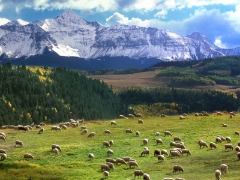

El ecosistema es la unidad de estudio de la Ecología. Se puede definir como un sistema abierto donde interactúan los componentes estructurales bióticos y abióticos, y el flujo de materia y energía a través de ello, que son componentes fincionales.
Todos los ecosistemas se clasifican en cieto grado. La estratificación se refiere a las separaciones entre los oranismos en el espacio, o bien, e el tiempo.
-
La estratificación en el espacio puede ser vertical u horizonatal.
-
La estratificación vertical se distingue por estratos: uno superior, por el que penetra la luz, y otro inferior, donde se acumula la materia orgánica.
-
La estratificación horizontal estudia la vegetación en anillos concéntricos desde límites exteriores del ecosistema hacia el centro.
Las áreas de transición que separan a un ecosistema de otro se conoce como ecotonos. Por lo regular los ecotonos continen flora y fauna de ambos ecosistemas y especies adaptadas al propio ecotono. Un bosque mesófilo de montaña es un ejemplo de ecotono, es un ecosistema de transición entre bosque templado y bosque tropical. Estos ecosistemas contienen una gran biodoversidad, ya que existen especies tanto de bosque templado como de selva, pero tambien especies únicas del lugar.
La estratificación dentro de una comunidad nos indica qué tan diverso es el ecosistema. A medida que aumenta el grado de estratificación, crece el número de organismos y de especies que lo habitan. Entonces podemos afirmar que entre mayor sea la estratificación, mayor será la biodiversidad y complejidad de un ecosistema, así como su estabilidad.
Finalmente, la estratificación temporal o periodicidad se refiere a los cambios recurrentes, resultado de los cambios cíclicos en las actividades de los oranismos de un ecosistema. La periodicidad de un ecosistema es producida por los cambios de la flora y fauna del lugar que resultan de los ritmos diarios, lunares y estacionales.
-
Ritmos diarios: los organismos coordinan sus actividades dentro del fotoperiodode 24 horas representado por el dia y la noche. Hay organismos diurnos (activos en el día) y nocturnos (activos en la noche).
-
Ritmos lunares: corresponden al mes lunar. Las mareas y organismos marinos muestran una periodicidad lunar.
-
Ritmos estacionales: ritmos que corresponden a las estaciones del año.
Evolución de las comunidades bióticas
La sucesión ecologíca es el proceso mediante el cual los ecosistemas cambian a través del tiempo y dependen de la progresión de una comunidad desde la etapa pionera o inicial hasta que son una comunidad madura o estable. Si un volcán hace erupción, la lava que expulsa matará la vegetación inmediata y pasarán años hasta que las primeras especies pioneras y formadoras de suelo comiencen a surgir, y muchos años más para la aparición de los primeros arbustos. La comunidad final en una sucesión se denomina comunidad clímax.
Clasificación de ecosistemas
Ecosistema terrestre
Es el ecosistema que se desarrolla en la superficie terrestre conocida como Biosfera, es decir, el ecosistema que se desarrolla en el suelo o en el subsuelo. Dependen de varios factores, como por ejemplo:
-
la humedad
-
la temperatura
-
la altitud
-
la latitud
Es decir, cuanta más humedad y temperatura y menos altitud y latitud, los ecosistemas serán más variados, heterogéneos, exhuberantes y ricos que aquellos que tengan poca humedad y temperatura y se encuentren a gran altitud.
Por lo general, los ecosistemas acuáticos y, en gran medida, los seres vivos que los componen son más variados y contienen una mayor riqueza biológica que los ecosistemas acuáticos por la mayor incedencia de calor proveniente del sol, por la mayor facilidad para encontrar alimentación o por una mayor cantidad de luz que en medios acuáticos.
Tipos de ecosistemas terrestres
A continuación desglosaremos los tipos de ecosistemas terrestres más comunes:
-
Bosques: Los bosques son el ecosistema principal de la biosféra y, a su vez, hay muchos tipos de ecosistemas conformados por bosques, como por ejemplo el bosque seco o el bosque de coníferas
-
Matorrales: Son todos aquellos ecosistemas que están formados por abustos de pequeño tamaño o matorrales
-
Herbazal: Los herbazales están formados por hierbas y suelen encontrarse en climas de condiciones semiáridas. Algunos tipos de herbazales pueden ser las praderas o, incluso, las conocidas sabanas.
-
Ecosistemas artificiales: Los ecosistemas artificiales son todos aquellos creados sin intervención de la naturaleza o con intervención del ser humano. Los ejemplos más comunes de ecosistemas artificiales podrían ser las ciudades o los campos diseñados para el cultivo.
-
Desierto: Son biomas donde no hay apenas precipitaciones y suelen encontrarse en climas tropicales.
-
Tundra: La tundra la forma vegetación pequeña como musgos y líquenes y se caracteriza porque su superficie (o subsuelo) está congelada.

Ecosistemas acuáticos
Los ecosistemas acuáticos son aquellos formados por los océanos, lagos, ríos, pantanos y en definitiva por las aguas continentales, ya sean dulces o saladas y los animales que habitan en ellos. Los animales que habitan en los ecosistemas acuáticos se han adaptado al agua y como consecuencia principal comparten características comunes como, por ejemplo, la respiración branquial.
El ecosistema acuático es el más común del planeta tierra, pues ésta está conformada en un 75 por ciento de agua, ya sea dulce o salada.
Clasificación de ecosistemas acuáticos
-
Ecosistemas marinos: Son todos los ecosistemas formados por mares y océanos y pueden ser a su vez de dos tipos
-
Ecosistemas marinos fóticos: Son todos los ecosistemas marinos en los que no hay apenas profundidad y entra la suficiente luz como para que un organismo pueda realizar la fotosíntesis. Lo que sucede cuando no hay más de doscientos metros de profundidad. Algunos tipos de ecosistemas fóticos pueden ser las playas y costas, los arrecifes de coral o las desembocaduras del río.
-
Ecosistemas marinos afóticos: Al contrario que en el caso anterior, los ecosistemas marinos afóticos son aquellos en los que la luz solar no llega de forma suficiente como para que un organismo pueda realizar la fotosíntesis.
-
Ecosistemas de agua dulce: Los ecosistemas de agua dulce son todos los formados por ríos, lagos, manantiales y, en general, cualquier masa de agua dulce y los animales que habitan en ellos.
Ecosistemas aéreos
Los ecosistemas aéreos se puede considerar como un ecosistema temporal, pues ningún ser vivo puede vivir de forma permanente en el aire. Las aves son los principales seres vivos que habitan los ecosistemas aéreos, aunque también hay una gran cantidad de insectos que se podrían incluir en este tipo de ecosistemas.
Sin embargo, como todas las aves o insectos deben descansar, reproducirse o alimentarse (es decir, realizar las funciones más importantes) en tierra, se suele considerar el ecosistema aéreo como una parte del ecosistema terrestre.
Referencias
María Eugenia Méndez Rosales, (2015), Ecología y medio ambiente, Book Mart, México, pags.57-58.
https://tiposde.eu/tipos-de-ecosistemas/